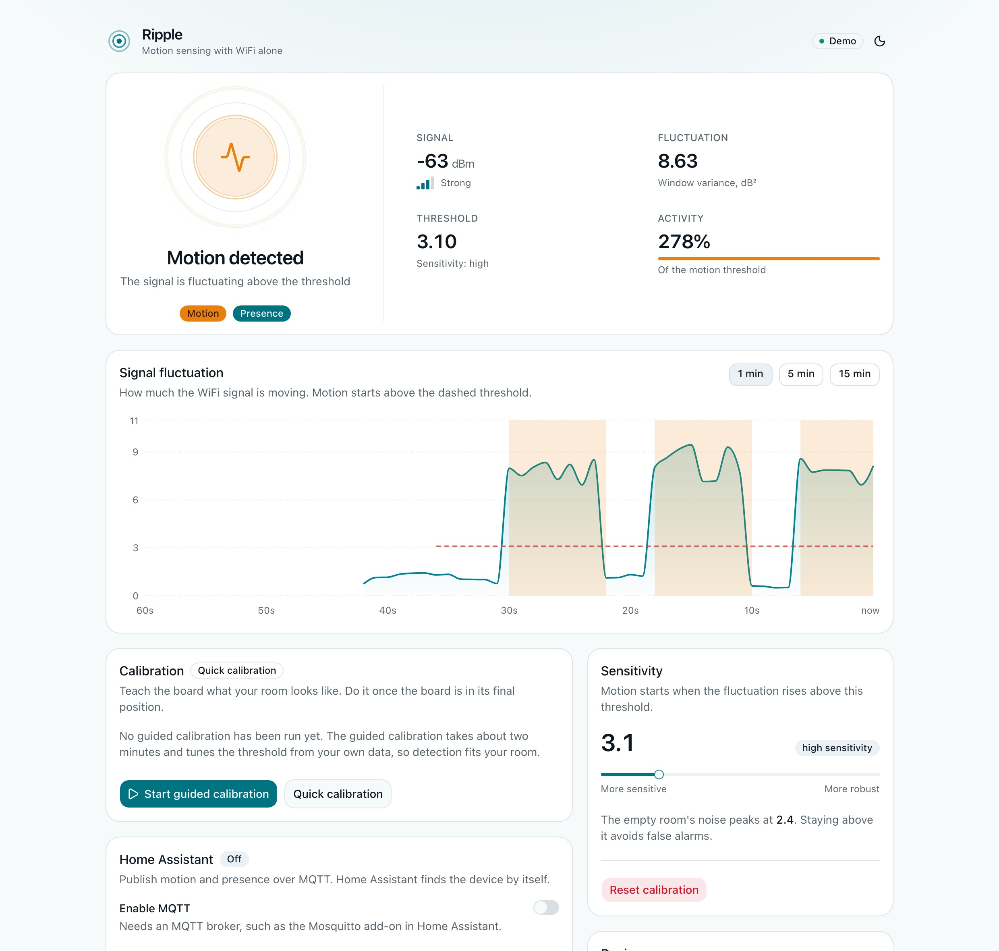
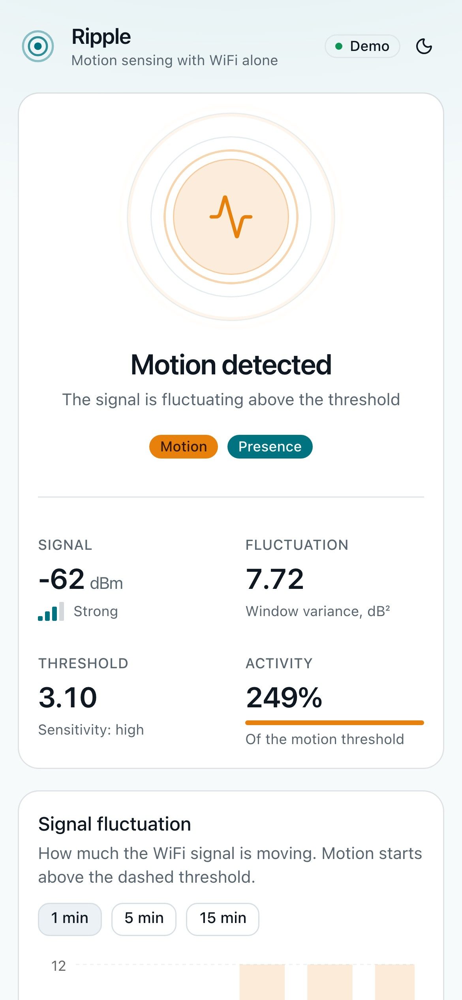
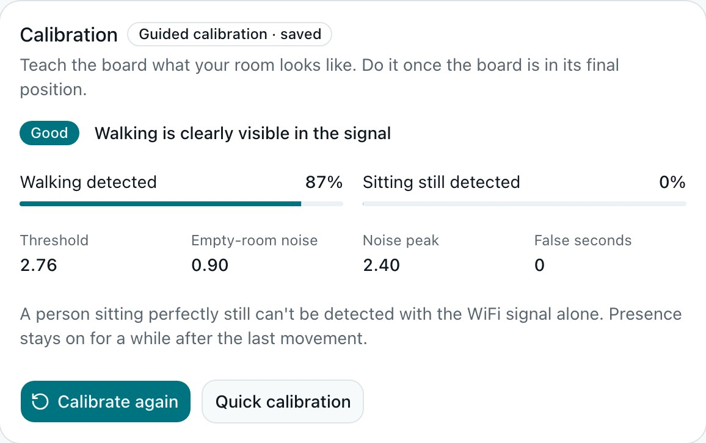
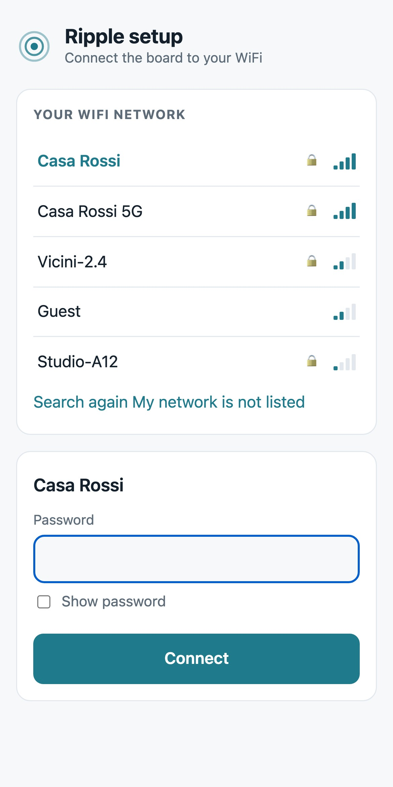
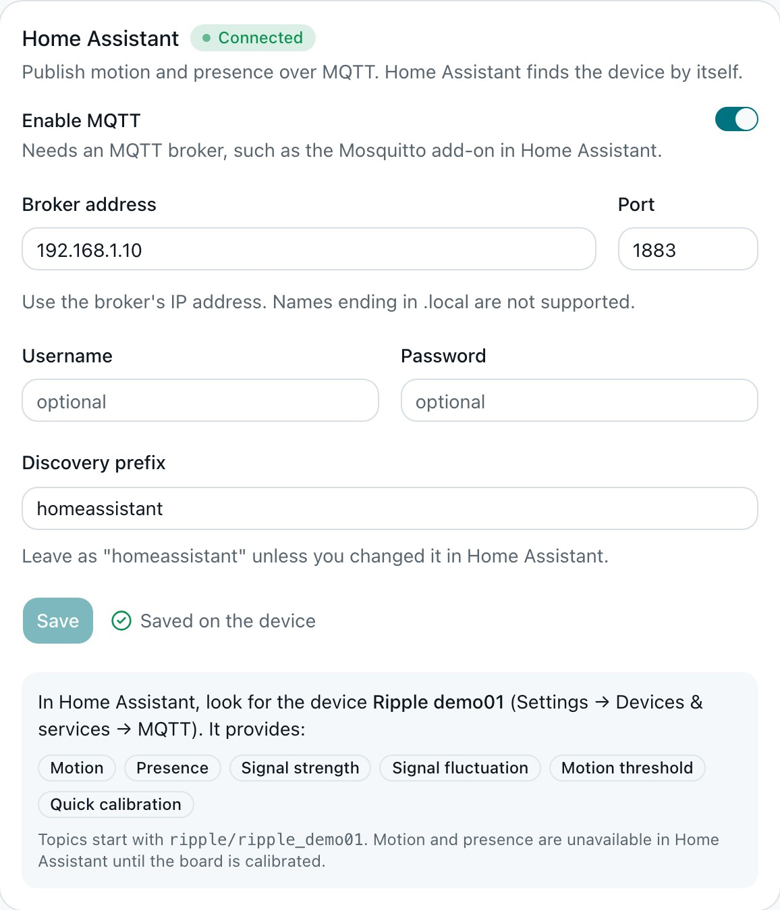

Open source · ESP8266 · Home Assistant
Sense motion with nothing but WiFi.
Ripple turns a €3 ESP8266 into a motion and presence sensor. No camera, no PIR, no extra hardware: it listens to how people disturb the WiFi you already have.
- 10 readings a second
- 100% local, no cloud
- MQTT & Home Assistant
- MIT licensed
How it works
A body in the room changes the radio waves in it.
The strength of the link between your board and your router is never perfectly steady. When someone moves, it jumps around more. Ripple measures how much, and learns what counts as normal in your room.
Listen
Ten times a second, the board reads the signal strength (RSSI) of its connection to your router and keeps the last two seconds.
Learn
A four-step guided calibration records your empty room and you walking, sets the threshold from that data, and tells you honestly how well it works in that spot.
Detect
When the signal fluctuates more than your room's normal noise, that's motion. Presence stays on for 30 seconds after the last movement.
The dashboard
A real interface, served by a €3 board.
Open the board's address in any browser: live signal chart, calibration, sensitivity, Home Assistant settings. Light and dark themes, works on your phone, no internet needed.




Open the interactive demo A simulated board: nothing to install.
What you get
Small hardware, thorough software.
- Guided calibrationTunes itself from your room and grades the result: good, fair or poor.
- WiFi setup without codeThe board opens its own network with a setup page: pick your WiFi, done. No file to edit.
- Home Assistant, no YAMLMQTT discovery creates the device and its entities by itself.
- Local and privateNo cloud, no account, no camera. It detects movement, not who moved.
- ResilientSettings survive reboots. A broker that is down never interrupts sensing, and the board reconnects by itself after a power cut.
- Open and testedMIT licensed, with unit tests for the algorithm and the calibration, and CI on every change.
Home Assistant
It shows up by itself.
Enter your MQTT broker once. Home Assistant finds a device called Ripple xxxxxx with everything below, and marks it unavailable if the board drops off the network, so an offline sensor never looks like "no motion".
- Motion
- Presence
- Signal strength
- Signal fluctuation
- Motion threshold
- Quick calibration

Straight talk
What it can't do
The ESP8266 only exposes a rough, whole-number signal strength, not the rich radio data an ESP32 can give. So:
- It sees movement, not stillness. Someone sitting perfectly still doesn't disturb the signal. That's why presence means "movement in the last 30 seconds".
- Placement matters a lot. Right next to the router the link is so stable that walking can be invisible. A few metres away, with people crossing the line between board and router, works far better. The calibration tells you when a spot is poor.
- Other things move the signal too: pets, fans, neighbours' WiFi.
- It's a convenience sensor, not a security device.
Hardware
Any ESP8266 with 4 MB of flash.
Typically €3–6. Power it from a USB charger near where you want to sense.
| Board | Status |
|---|---|
| NodeMCU v2 / v3 | Supported |
| Wemos / LOLIN D1 mini | Supported |
| Generic ESP-12E / ESP-12F module | Supported |
| ESP-01 (1 MB flash) | Too small for the dashboard |
| ESP32 | Not yet: it has better radio data, contributions welcome |
Get started
Ten minutes, three steps.
Flash
Plug the board in and use the web installer in Chrome or Edge. No tools to install.
Connect
Join the
Ripple-xxxxxxWiFi network the board opens, pick your own WiFi on the page that appears, and openripple-xxxxxx.local.Calibrate
Press Start guided calibration and follow the four steps. Then, if you like, add it to Home Assistant.
Questions
FAQ
Does it need the internet?
No. The board serves its own dashboard and talks to your own router and MQTT broker. Nothing leaves your network.
How accurate is it?
It depends on the room and on where you put the board, which is why the calibration grades itself. In a good spot it catches most walking; in a bad one it catches almost none. Real reports help us improve: tell us how it goes at home.
Can it detect someone sitting still?
No. A person who isn't moving doesn't change the signal enough. Presence is "there was movement in the last 30 seconds".
Can it see through walls?
Walls weaken the effect, so one board covers one room reasonably and little beyond it.
Is it a camera? Does it identify people?
No camera, no microphone. It measures radio signal strength and can't tell who moved, only that something did.
Does it work with an ESP32?
Not yet. The ESP32 can provide much richer channel data, and that would be a great contribution.
Is it secure?
It is meant for a trusted home network: the dashboard has no password yet, so don't expose it to the internet. Details are in the security notes.
Give your WiFi a second job.
Try it in your browser first, then put it on a board.